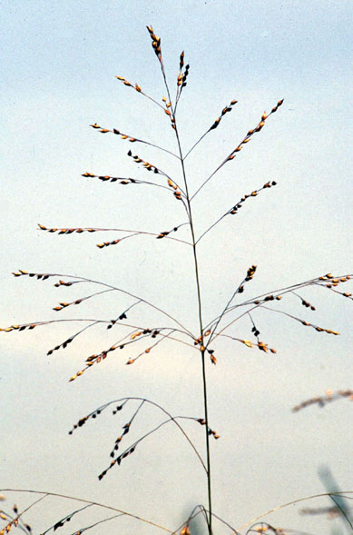
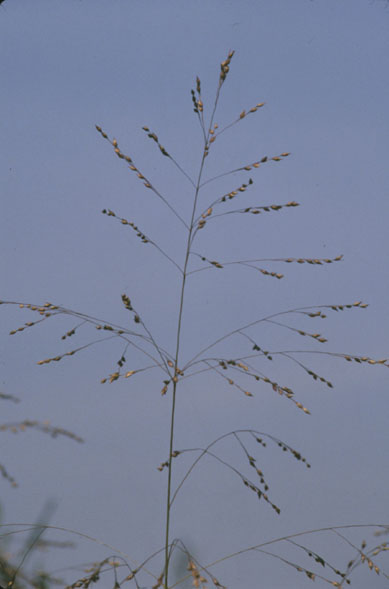
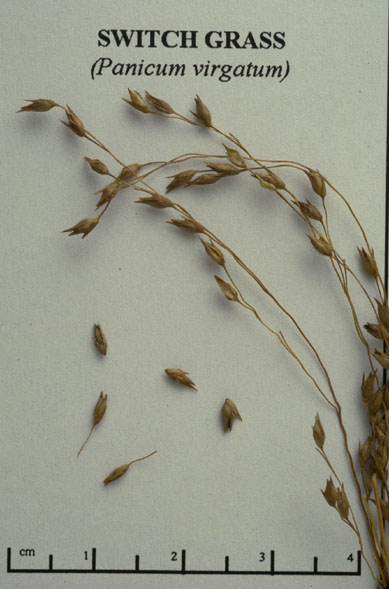

Panicum Virgatum
Family: Poaceae
Switch Grass
Swink/Wilhelm #5


Click to view larger photo
FLOWERING: Late July - August
SEED TIMING: Mid-September to late October
HABITAT: Moist to dry prairies.
DIAGNOSTIC FEATURES: Tufted grass 3 - 6 feet high. Stout, erect stems in large clumps. Leaves are 8 - 20 inches long and have a patch of dense hairs in form of inverted "v" shape where they join the stem. Large open panicles are up to 16 inches long and begin to form in July.
TO PICK: Large teardrop-shaped seeds are borne on open panicles. They are light tan in color and strip off easily. It is best to wear gloves as the dry stalks tend to produce slivers on bare hands.